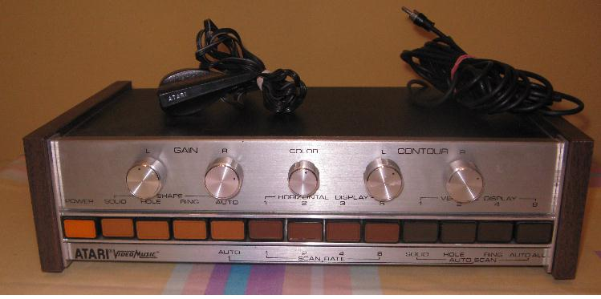
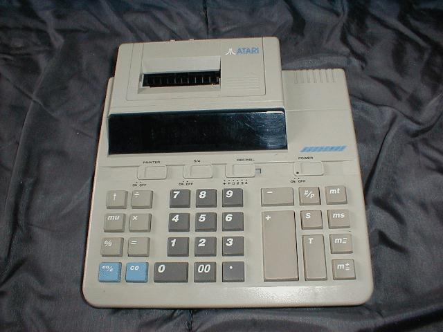
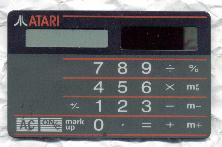
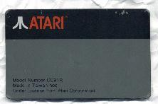

ATARI VIDEOMUSIC (C-240)

Przyrząd służący do wyświetlania w takt muzyki różnych kolorowych figur na ekranie telewizora.
Jest to jedno z rzadziej spotykanych urządzeń firmy Atari produkowane w drugiej połowie lat siedemdziesiątych ubiegłego wieku.
Kalkulator ATARI DMP2002

Kalkulator posiada mechanizm drukujący z poziomym bębnem czcionkowym. Barwnik
przenoszony jest z walcowej gąbki nasączonej tuszem (podobnie jak w drukarce Atari 1027).
Posiada dziesięciopozycyjny wyświetlacz siedmiosegmentowy o niebieskiej barwie świecenia.
Zasilanie: 4 baterie typu R6 lub zasilacz zewnętrzny 6V/0,5A DC.
Kalkulator CC91r


Kalkulator-reklamówka wielkości karty kredytowej. Raczej ciekawostka niż eksponat, ale z powodu umieszczonego na nim logo znalazł tu swoje miejsce. Niestety, jest uszkodzony.